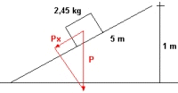

Esquema del cuerpo y la fuerza en un plano inclinado.

Solución
a) La componente Px de la fuerza peso es la causante del desplazamiento.
Px = P·sen α
Geométricamente:
Px = P·(1 m/5 m)
Px = P·(1 m/5 m)
Px = P·0,2
De estas fuerzas obtenemos la aceleración del cuerpo en dirección del plano:
a·m = g·m·0,2
a = g·0,2
a = 10 m/s²·0,2
a = 2 m/s²
El espacio recorrido será:
e = ½·a·t²
e = ½·2 m/s²·(1,5 s)²
-----------------------------------------------------------------------
e = 2,25 m
-----------------------------------------------------------------------
b) Mediante cinemática calculamos la velocidad a los 1,5 s:
vf² - vi² = 2·a·e
vf² - 0 = 2·2 m/s²·2,25 m
vf = 3 m/s
Ec = ½·m·vf²
Ec = ½·2,45 kg·(3 m/s)²
-----------------------------------------------------------------------
Ec = 11,025 J
-----------------------------------------------------------------------
c) Como la energía potencial depende de la altura calculamos que altura se corresponde con el desplazamiento de 2,25 m.
Por triángulos semejantes:
1 m/5 m = h/2,25 m
h = 2,25 m/5
h = 0,45 m
Ep = m·g·h
Ep = 2,45 kg·10 m/s²·0,45 m
-----------------------------------------------------------------------
Ep = 11,025 J
-----------------------------------------------------------------------